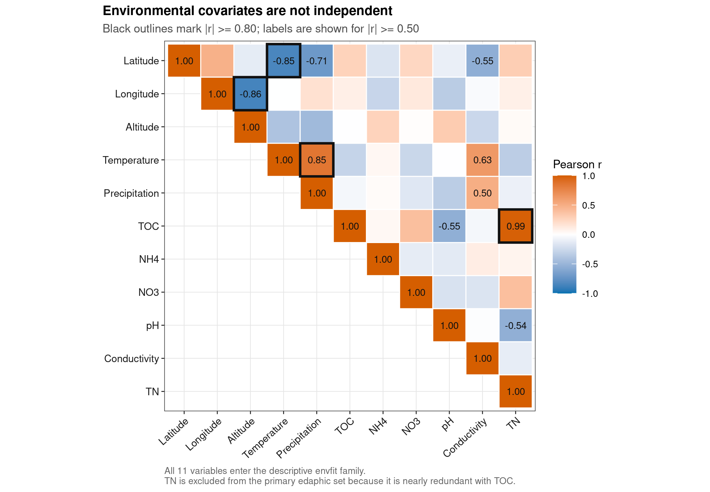
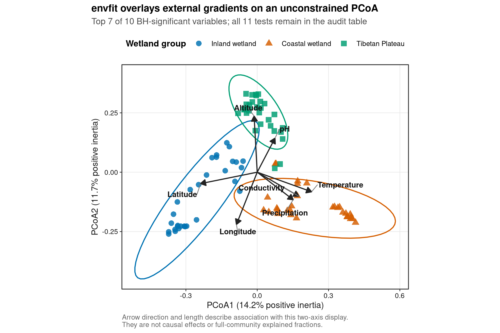
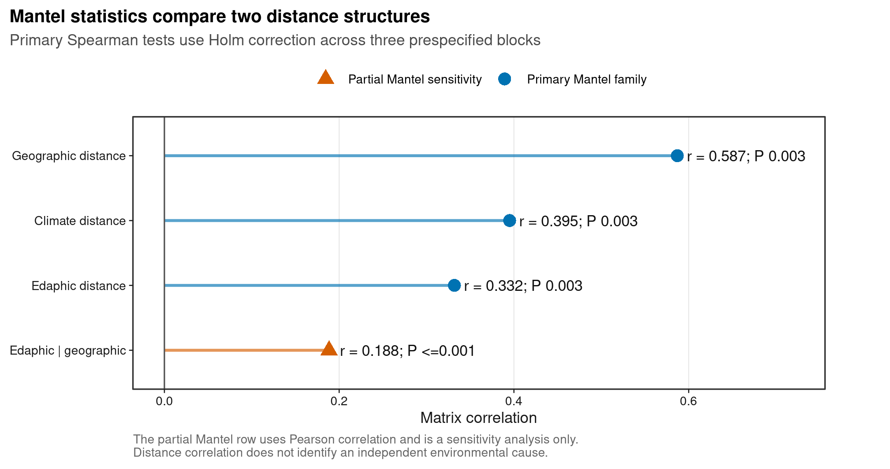
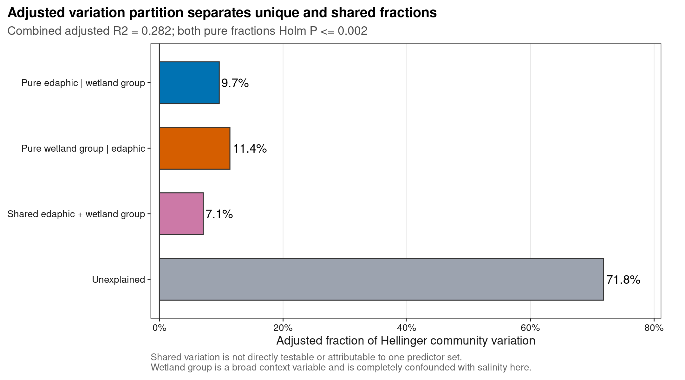

options(timeout = 600)
data_url <- "https://raw.githubusercontent.com/petemeng/microbiome-best-practices/3cb6a817e0c73ab7ecbec1cedc1ad80cbb9ecfaa/"
input_files <- c(
"data/small/environment.tsv",
"data/small/metadata.tsv",
"data/small/otutab.tsv",
"data/small/taxonomy.tsv"
)
for (path in input_files) {
dir.create(dirname(path), recursive = TRUE, showWarnings = FALSE)
if (!file.exists(path)) download.file(paste0(data_url, path), path, mode = "wb", quiet = TRUE)
}方差解构：envfit/Mantel/VPA 变异分解
环境变量能解释多少变异，取决于问题分解
环境或宿主因素很多时，论文通常会把三类图放在同一条证据链中：
- PCoA/NMDS 上叠加环境箭头，显示变量沿哪一方向变化；
- Mantel 点图或热图，比较群落距离与环境、气候、地理距离；
- variation partitioning analysis（VPA，变异分解），区分两个预测变量集合的独立、共享和未解释部分。
Falony et al. (2016)在 1,106 人的发现队列和 1,135 人的复现队列中系统筛查了临床与问卷协变量；其 Figure 3 一类的累计效应量图强调：微生物组差异通常由许多相关因素共同贡献，单个小 P 值不等于解释了大量群落变异。
以下分析使用 microeco 2.0.0 公开分发的中国湿地土壤 16S 数据。数据来自 An et al. (2019)，包含 90 个可与环境表匹配的样本；microeco 的数据与软件说明见 Liu et al. (2021)。
重要先给结论
在预先固定的 5% prevalence filter 后保留 11,113 个 OTU。11 个连续变量的 envfit 检验中，10 个经 BH 校正后达到 0.05；最强的两个二维关联为 Temperature（(r^2=0.801)）和 Latitude（(r^2=0.801)）。这里的 (r^2) 只描述变量与当前两条 PCoA 轴的拟合，不是完整群落表的解释率。
三组预设 Mantel 检验均为正关联：edaphic、climate 和 geographic distance 的 Spearman (r) 分别为 0.332、0.395 和 0.587，三者 Holm-adjusted (P=0.003)。Mantel (r) 是两个距离矩阵的相关，不是 explained variance，也不能确认独立环境驱动。
Hellinger VPA 的 combined adjusted (R^2=0.282)：纯土壤变量占 9.7%，纯 wetland group 占 11.4%，共享部分占 7.1%，未解释部分占 71.8%；两个纯组分的 Holm-adjusted (P=0.002)。Group 与 Saline 在这批数据中完全混杂，因此这些比例是统计关联分解，不能被写成盐度或地域的因果贡献。
下载并读取本次分析的数据
需要 R，以及 ggplot2、jsonlite、permute、ragg、scales、svglite、vegan。本次使用中国湿地的 OTU count 表、分类表和样本信息表，以及本次分析使用的实测环境变量或系统发育信息。
在一个新建的文件夹中运行以下代码，下载文件后按文中的顺序继续分析：
library(ggplot2)
library(vegan)
set.seed(20260725)
font_pub <- "sans"
pal_pub <- c(
blue = "#0072B2",
orange = "#E69F00",
green = "#009E73",
vermillion = "#D55E00",
purple = "#CC79A7",
sky = "#56B4E9",
yellow = "#F0E442",
grey = "#6B7280"
)
scale_color_pub <- function(..., values = unname(pal_pub)) {
ggplot2::scale_color_manual(..., values = values)
}
scale_fill_pub <- function(..., values = unname(pal_pub)) {
ggplot2::scale_fill_manual(..., values = values)
}
theme_pub <- function(base_size = 10, base_family = font_pub) {
ggplot2::theme_bw(base_size = base_size, base_family = base_family) +
ggplot2::theme(
panel.grid.minor = ggplot2::element_blank(),
panel.grid.major = ggplot2::element_line(
colour = "#E6E6E6", linewidth = 0.25
),
axis.text = ggplot2::element_text(colour = "#1A1A1A"),
axis.title = ggplot2::element_text(colour = "#1A1A1A"),
axis.ticks = ggplot2::element_line(
colour = "#1A1A1A", linewidth = 0.3
),
plot.title.position = "plot",
plot.title = ggplot2::element_text(
face = "bold", size = ggplot2::rel(1.15)
),
plot.subtitle = ggplot2::element_text(colour = "#4D4D4D"),
plot.caption = ggplot2::element_text(colour = "#666666", hjust = 0),
strip.background = ggplot2::element_rect(
fill = "#F2F2F2", colour = "#B3B3B3", linewidth = 0.3
),
strip.text = ggplot2::element_text(face = "bold"),
legend.key = ggplot2::element_blank(),
legend.position = "top"
)
}
save_pub <- function(
plot, file_base, width = 89, height = 70, units = "mm",
dpi = 600, write_svg = TRUE, write_tiff = TRUE,
base_family = font_pub
) {
dir.create(dirname(file_base), recursive = TRUE, showWarnings = FALSE)
ggplot2::ggsave(
paste0(file_base, ".pdf"), plot,
width = width, height = height, units = units,
device = grDevices::cairo_pdf, family = base_family, bg = "white"
)
if (isTRUE(write_svg)) {
ggplot2::ggsave(
paste0(file_base, ".svg"), plot,
width = width, height = height, units = units,
device = svglite::svglite, bg = "white"
)
}
ggplot2::ggsave(
paste0(file_base, ".png"), plot,
width = width, height = height, units = units, dpi = dpi,
device = ragg::agg_png, bg = "white"
)
if (isTRUE(write_tiff)) {
ggplot2::ggsave(
paste0(file_base, ".tiff"), plot,
width = width, height = height, units = units, dpi = dpi,
device = ragg::agg_tiff, compression = "lzw", bg = "white"
)
}
invisible(plot)
}读取四张表并锁定样本顺序
三件套仍是群落数据入口；environment.tsv是本分析额外需要的样本级环境表。环境表可包含更多样本，进入模型前按三件套共同样本显式取交集和排序。
read_keyed_tsv <- function(path) {
x <- readr::read_tsv(
path,
show_col_types = FALSE,
progress = FALSE,
name_repair = "minimal",
na = character(),
col_types = readr::cols(.default = readr::col_character())
)
ids <- as.character(x[[1]])
stopifnot(!anyDuplicated(ids))
out <- as.data.frame(x[-1], check.names = FALSE)
rownames(out) <- ids
out
}
input_paths <- c(
otutab = "data/small/otutab.tsv",
taxonomy = "data/small/taxonomy.tsv",
metadata = "data/small/metadata.tsv",
environment = "data/small/environment.tsv"
)
expected_sha256 <- c(
otutab = "76fa79c38da889f35978dc86da4641a270961746709ff38049ee5f67e3c6f7a3",
taxonomy = "725280bb9a0cd9bda7b540022e92af945ceed52527f8b2d220b055b4489f6901",
metadata = "df24771dccf27607ddf922c6bca2cafa876d946fbe2e09d14b601accce66ba64",
environment = "45814f6724e8abd901b8063ba227c42716777cd0749ac130e9cae99f0477f7a8"
)
observed_sha256 <- vapply(
input_paths,
digest::digest,
character(1),
algo = "sha256",
serialize = FALSE,
file = TRUE
)
stopifnot(identical(unname(observed_sha256), unname(expected_sha256)))
otu_frame <- read_keyed_tsv(input_paths[["otutab"]])
taxonomy <- read_keyed_tsv(input_paths[["taxonomy"]])
metadata <- read_keyed_tsv(input_paths[["metadata"]])
environment_frame <- read_keyed_tsv(input_paths[["environment"]])
counts_character <- as.matrix(otu_frame)
counts <- matrix(
as.numeric(counts_character),
nrow = nrow(counts_character),
ncol = ncol(counts_character),
dimnames = dimnames(counts_character)
)
environment_character <- as.matrix(environment_frame)
environment_all <- matrix(
as.numeric(environment_character),
nrow = nrow(environment_character),
ncol = ncol(environment_character),
dimnames = dimnames(environment_character)
)
sample_ids <- colnames(counts)
feature_ids <- rownames(counts)
environment_variables <- c(
"Latitude", "Longitude", "Altitude", "Temperature", "Precipitation",
"TOC", "NH4", "NO3", "pH", "Conductivity", "TN"
)
stopifnot(
setequal(feature_ids, rownames(taxonomy)),
setequal(sample_ids, rownames(metadata)),
all(sample_ids %in% rownames(environment_all)),
all(environment_variables %in% colnames(environment_all)),
all(is.finite(counts)),
all(counts >= 0),
all(abs(counts - round(counts)) < .Machine$double.eps^0.5)
)
taxonomy <- taxonomy[feature_ids, , drop = FALSE]
metadata <- metadata[sample_ids, , drop = FALSE]
environment <- as.data.frame(
environment_all[sample_ids, environment_variables, drop = FALSE],
check.names = FALSE
)
group_labels <- c(
IW = "Inland wetland",
CW = "Coastal wetland",
TW = "Tibetan Plateau"
)
metadata$GroupCode <- metadata$Group
metadata$Group <- factor(
unname(group_labels[metadata$GroupCode]),
levels = unname(group_labels)
)
metadata$Saline <- factor(metadata$Saline)
metadata$Type <- factor(metadata$Type)
dim(counts)
sum(counts)
head(counts[, 1:5])
head(taxonomy)
head(metadata)
head(environment)[1] 13628 90
[1] 1619670
S1 S2 S3 S4 S5
OTU_4272 1 0 1 1 0
OTU_236 1 4 0 2 35
OTU_399 9 2 2 4 4
OTU_1556 5 18 7 3 2
OTU_32 83 9 19 8 102
OTU_706 0 1 0 1 0
Kingdom Phylum
OTU_4272 k__Bacteria p__Firmicutes
OTU_236 k__Bacteria p__Chloroflexi
OTU_399 k__Bacteria p__Proteobacteria
OTU_1556 k__Bacteria p__Acidobacteria
OTU_32 k__Archaea p__Miscellaneous Crenarchaeotic Group
OTU_706 k__Bacteria p__Actinobacteria
Class Order Family
OTU_4272 c__Bacilli o__Bacillales f__
OTU_236 c__ o__ f__
OTU_399 c__Betaproteobacteria o__Nitrosomonadales f__Nitrosomonadaceae
OTU_1556 c__Acidobacteria o__Subgroup 17 f__
OTU_32 c__ o__ f__
OTU_706 c__Actinobacteria o__Frankiales f__Nakamurellaceae
Genus Species
OTU_4272 g__ s__
OTU_236 g__ s__
OTU_399 g__ s__
OTU_1556 g__ s__
OTU_32 g__ s__
OTU_706 g__Nakamurella s__
Group Type Saline GroupCode
S1 Inland wetland NE Non-saline soil IW
S2 Inland wetland NE Non-saline soil IW
S3 Inland wetland NE Non-saline soil IW
S4 Inland wetland NE Non-saline soil IW
S5 Inland wetland NE Non-saline soil IW
S6 Inland wetland NE Non-saline soil IW
Latitude Longitude Altitude Temperature Precipitation TOC NH4 NO3
S1 52.96482 122.5635 432 -4.2 445 10.02 18.95966 1.93
S2 52.94877 122.6109 445 -4.3 449 6.94 21.05730 1.46
S3 52.94932 122.6099 430 -4.3 449 8.38 14.31937 2.38
S4 52.94900 122.6104 430 -4.3 449 8.17 20.89645 1.38
S5 52.95292 122.6057 429 -4.3 449 8.41 9.65465 0.77
S6 52.95300 122.6123 429 -4.3 449 8.13 15.94577 1.31
pH Conductivity TN
S1 5.10 108.7 0.28
S2 6.53 31.2 0.22
S3 5.13 68.2 0.26
S4 5.81 64.4 0.25
S5 5.50 33.5 0.24
S6 5.37 33.3 0.26样本顺序必须在 counts、metadata、environment 和所有距离矩阵中保持一致。这里得到 13,628 × 90 的 count matrix，总计 1,619,670 reads；环境源表有 200 个样本，其中 90 个与三件套匹配。
下载完整 R 脚本。脚本包含数据下载、计算和图形导出。
首次使用时安装 R 包
install.packages(c(
"digest", "ggplot2", "jsonlite", "permute", "ragg",
"readr", "scales", "svglite", "systemfonts", "vegan"
))三种方法回答三个不同问题
envfit：变量与“当前排序图”是否对齐
vegan::envfit()把连续变量投影到已经完成的排序空间。箭头方向表示变量增加方向；箭头长度与当前展示轴上的相关强度有关。对连续变量，envfit 输出的 (r^2) 是变量与所提供排序坐标之间的 squared correlation。
本例把 11 个连续变量同时拟合到 Bray–Curtis PCoA 的前两轴，并把 11 个置换 P 值作为一个检验族做 Benjamini–Hochberg（BH）校正。图上只标出校正后显著变量中 (r^2) 最高的 7 个，完整 11 个结果仍保留在表中。
警告箭头长不等于解释率高
若重要信息落在第三轴以后，变量在二维图上的箭头可能很短。反过来，二维箭头很长也不代表它独立解释了完整群落表中的同等比例，更不证明因果。要回答多维 explained fraction，应使用 RDA/db-RDA、PERMANOVA 或 VPA，并报告相应的 (R^2)。
Mantel：两个距离结构是否同向变化
Mantel 检验把两个距离矩阵的下三角元素相关起来，并通过样本标签置换建立零分布。本例预先定义三组环境距离：
| 距离块 | 变量 | 距离定义 |
|---|---|---|
| Edaphic | pH、TOC、NH4、NO3、Conductivity | 各列 Z-score 后的 Euclidean distance |
| Climate | Temperature、Precipitation | 各列 Z-score 后的 Euclidean distance |
| Geographic | Latitude、Longitude | Haversine great-circle distance（km） |
主检验用 Spearman 相关，三个 P 值做 Holm 校正。距离中的变量先标准化，否则 Conductivity 这类数值跨度大的列会主导 Euclidean distance。
深入：为什么 partial Mantel 只放敏感性分析
partial Mantel 尝试在控制第三个距离矩阵后关联另外两个距离矩阵，但“控制距离”不等于在原始变量尺度上完成可靠的混杂调整。空间自相关下，它还可能出现错误率失控；Guillot & Rousset (2013)对此给出系统批评。
vegan 文档还特别提醒，partial Mantel 的非 Pearson 相关实现可能有问题。因此本页只额外给出 Pearson partial Mantel 作为敏感性结果，不把它放进主检验族，也不据此声称“排除了地理影响”。需要正式控制空间结构时，应在样本级模型中显式加入空间坐标、空间基函数或研究设计中的 site/block。
VPA：两个预测集合的独立和共享 adjusted R²
VPA 把 Hellinger-transformed community matrix 的变异拆成：
[ 1=[a]+[b]+[c]+[d] ]
- ([a])：edaphic set 在控制 wetland group 后的纯组分；
- ([b])：wetland group 在控制 edaphic set 后的纯组分；
- ([c])：两组预测变量共享的算术重叠；
- ([d])：未解释部分。
这里使用 adjusted (R^2)，因为原始 (R^2) 会随着预测变量数量增加而上升。只有 ([a]) 和 ([b]) 能通过 partial RDA 直接检验；共享组分 ([c]) 不能唯一归属给某一组变量，也不能直接做置换检验。共享组分在其他数据中可能为负值，那是调整后估计与共线性共同作用的结果，不应强制截断成 0。
注记先看共线性，再定义变量集合
11 个变量中有 4 对 (|r|)，其中 TOC 与 TN 的 Pearson (r=0.988)。因此 TN 不进入主 edaphic set，避免几乎重复计入同一梯度；它仍保留在 envfit 描述性检验中。变量集合应由问题和测量含义预先定义，不能根据哪个组合 P 最小再反选。
比较环境关联与独立解释比例
先审计设计与环境变量相关性
design_cross <- with(metadata, table(Group, Saline))
design_cross
group_determines_saline <- all(rowSums(design_cross > 0) == 1L)
repeat_columns <- intersect(
c("SubjectID", "PairID", "Block", "SiteID", "Time", "Batch"),
colnames(metadata)
)
stopifnot(group_determines_saline, length(repeat_columns) == 0L)
correlation_matrix <- stats::cor(environment, method = "pearson")
correlation_index <- expand.grid(
Variable1 = rownames(correlation_matrix),
Variable2 = colnames(correlation_matrix),
stringsAsFactors = FALSE
)
correlation_index$PearsonR <- as.vector(correlation_matrix)
correlation_index$AbsR <- abs(correlation_index$PearsonR)
variable_order <- setNames(seq_along(environment_variables), environment_variables)
correlation_index$UniquePair <-
variable_order[correlation_index$Variable1] <
variable_order[correlation_index$Variable2]
high_correlation_pairs <- subset(
correlation_index,
UniquePair & AbsR >= 0.80,
select = c(Variable1, Variable2, PearsonR, AbsR)
)
high_correlation_pairs Saline
Group Non-saline soil Saline soil
Inland wetland 30 0
Coastal wetland 0 30
Tibetan Plateau 0 30
Variable1 Variable2 PearsonR AbsR
24 Longitude Altitude -0.8637498 0.8637498
34 Latitude Temperature -0.8454553 0.8454553
48 Temperature Precipitation 0.8540615 0.8540615
116 TOC TN 0.9880195 0.9880195
注意没有 block 列，不等于已经证明样本独立
公开 metadata 没有 subject、pair、block、site、time 或 batch 标识，因此示例只能按独立样本做自由置换。这是可用信息下的分析边界，不是对原始采样独立性的额外证明。自己的数据只要有重复测量、区组、家庭、笼位或地点层级，就必须据此限制置换。
固定 feature filter、两种群落表示和置换矩阵
envfit 与 Mantel 使用 relative-abundance Bray–Curtis；VPA 使用 Hellinger-transformed count matrix。两条分支不能混称为同一种标准化。
primary_seed <- 20260725L
permutation_count <- 999L
min_prevalence <- 0.05
minimum_samples <- ceiling(min_prevalence * ncol(counts))
primary_keep <- rowSums(counts > 0) >= minimum_samples
primary_counts <- counts[primary_keep, , drop = FALSE]
community_counts <- t(primary_counts)
community_relative <- sweep(
community_counts,
1,
rowSums(community_counts),
"/"
)
community_hellinger <- vegan::decostand(
community_counts,
method = "hellinger"
)
bray_distance <- vegan::vegdist(community_relative, method = "bray")
permutation_control <- permute::how(
within = permute::Within(type = "free"),
nperm = permutation_count
)
set.seed(primary_seed)
permutation_matrix <- permute::shuffleSet(
n = length(sample_ids),
nset = permutation_count,
control = permutation_control
)
stopifnot(
sum(primary_keep) == 11113L,
minimum_samples == 5L,
max(abs(rowSums(community_relative) - 1)) < 1e-12,
all(is.finite(community_hellinger)),
nrow(unique(as.data.frame(permutation_matrix))) == 999L
)
data.frame(
Samples = nrow(community_counts),
FeaturesBefore = nrow(counts),
FeaturesAfter = nrow(primary_counts),
MinimumSamples = minimum_samples,
Permutations = nrow(permutation_matrix),
MinimumP = 1 / (permutation_count + 1)
) Samples FeaturesBefore FeaturesAfter MinimumSamples Permutations MinimumP
1 90 13628 11113 5 999 0.001PCoA 后运行 envfit，并校正 11 个检验
先完成 unconstrained ordination，再把环境变量作为外部向量拟合；envfit 不会反过来改变 PCoA 坐标。
pcoa <- vegan::wcmdscale(
bray_distance,
k = 2,
eig = TRUE,
add = "lingoes",
x.ret = TRUE
)
pcoa_scores <- data.frame(
SampleID = rownames(pcoa$points),
PCoA1 = pcoa$points[, 1],
PCoA2 = pcoa$points[, 2],
Group = metadata[rownames(pcoa$points), "Group"],
stringsAsFactors = FALSE
)
positive_eigenvalues <- pcoa$eig[pcoa$eig > 0]
pcoa_axis_percent <- 100 * pcoa$eig[1:2] / sum(positive_eigenvalues)
environment_z <- as.data.frame(scale(environment))
set.seed(primary_seed)
envfit_result <- vegan::envfit(
pcoa$points,
environment_z,
permutations = permutation_matrix,
w = rep(1, nrow(pcoa$points)),
na.rm = FALSE
)
envfit_scaled_scores <- vegan::scores(envfit_result, display = "vectors")
envfit_results <- data.frame(
Variable = rownames(envfit_result$vectors$arrows),
Axis1Direction = envfit_result$vectors$arrows[, 1],
Axis2Direction = envfit_result$vectors$arrows[, 2],
PlotAxis1 = envfit_scaled_scores[, 1],
PlotAxis2 = envfit_scaled_scores[, 2],
TwoAxisR2 = as.numeric(envfit_result$vectors$r),
PValue = as.numeric(envfit_result$vectors$pvals),
stringsAsFactors = FALSE
)
envfit_results$PAdjustedBH <- stats::p.adjust(
envfit_results$PValue,
method = "BH"
)
envfit_results$RejectBH05 <- envfit_results$PAdjustedBH < 0.05
envfit_results <- envfit_results[
order(envfit_results$PAdjustedBH, -envfit_results$TwoAxisR2),
,
drop = FALSE
]
rownames(envfit_results) <- NULL
envfit_results[, c(
"Variable", "TwoAxisR2", "PValue", "PAdjustedBH", "RejectBH05"
)] Variable TwoAxisR2 PValue PAdjustedBH RejectBH05
1 Temperature 0.80081147 0.001 0.001571429 TRUE
2 Latitude 0.80065933 0.001 0.001571429 TRUE
3 Altitude 0.75850835 0.001 0.001571429 TRUE
4 Longitude 0.75815444 0.001 0.001571429 TRUE
5 Conductivity 0.55309350 0.001 0.001571429 TRUE
6 Precipitation 0.49254244 0.001 0.001571429 TRUE
7 pH 0.35345342 0.001 0.001571429 TRUE
8 TN 0.18690456 0.002 0.002444444 TRUE
9 TOC 0.17006029 0.002 0.002444444 TRUE
10 NO3 0.07919999 0.028 0.030800000 TRUE
11 NH4 0.05546100 0.073 0.073000000 FALSE本数据的 Bray–Curtis 距离没有负 eigenvalues，因此虽然显式请求了 add = "lingoes"，实际加常数为 0。代码保留该选项，避免换数据后静默忽略非欧氏距离问题；坐标轴百分比按正 eigenvalues 计算。
把环境变量预注册成三个 Mantel 距离块
edaphic_names <- c("pH", "TOC", "NH4", "NO3", "Conductivity")
climate_names <- c("Temperature", "Precipitation")
edaphic_z <- as.data.frame(scale(environment[, edaphic_names, drop = FALSE]))
climate_z <- as.data.frame(scale(environment[, climate_names, drop = FALSE]))
haversine_dist <- function(latitude, longitude, ids = names(latitude)) {
rad <- pi / 180
lat <- latitude * rad
lon <- longitude * rad
n <- length(lat)
out <- matrix(0, n, n)
for (i in seq_len(n - 1L)) {
j <- (i + 1L):n
dlat <- lat[j] - lat[i]
dlon <- lon[j] - lon[i]
a <- sin(dlat / 2)^2 +
cos(lat[i]) * cos(lat[j]) * sin(dlon / 2)^2
out[i, j] <- 6371.0088 * 2 * atan2(
sqrt(a),
sqrt(pmax(0, 1 - a))
)
out[j, i] <- out[i, j]
}
dimnames(out) <- list(ids, ids)
stats::as.dist(out)
}
environment_distances <- list(
Edaphic = stats::dist(edaphic_z, method = "euclidean"),
Climate = stats::dist(climate_z, method = "euclidean"),
Geographic = haversine_dist(
environment$Latitude,
environment$Longitude,
sample_ids
)
)
mantel_results <- do.call(
rbind,
lapply(seq_along(environment_distances), function(i) {
set.seed(primary_seed)
fit <- vegan::mantel(
bray_distance,
environment_distances[[i]],
method = "spearman",
permutations = permutation_matrix,
na.rm = FALSE
)
data.frame(
DistanceBlock = names(environment_distances)[i],
Statistic = as.numeric(fit$statistic),
PValue = as.numeric(fit$signif),
Permutations = permutation_count,
stringsAsFactors = FALSE
)
})
)
mantel_results$PAdjustedHolm <- stats::p.adjust(
mantel_results$PValue,
method = "holm"
)
mantel_results$RejectHolm05 <- mantel_results$PAdjustedHolm < 0.05
mantel_results DistanceBlock Statistic PValue Permutations PAdjustedHolm RejectHolm05
1 Edaphic 0.3318957 0.001 999 0.003 TRUE
2 Climate 0.3950914 0.001 999 0.003 TRUE
3 Geographic 0.5869835 0.001 999 0.003 TRUE不要把 0.587 写成“地理解释了 58.7% 群落变异”。它表示样本对的 geographic distance 与 Bray–Curtis distance 有较强的单调正相关；样本对彼此不独立，所以 P 值来自样本标签置换，而不是普通相关检验。
partial Mantel 只作为带警告的敏感性结果
set.seed(primary_seed)
partial_mantel <- vegan::mantel.partial(
bray_distance,
environment_distances$Edaphic,
environment_distances$Geographic,
method = "pearson",
permutations = permutation_matrix,
na.rm = FALSE
)
partial_mantel_sensitivity <- data.frame(
Analysis = "Edaphic distance | geographic distance",
Method = "Pearson partial Mantel",
Statistic = as.numeric(partial_mantel$statistic),
PValue = as.numeric(partial_mantel$signif),
Permutations = permutation_count,
PrimaryInference = FALSE,
stringsAsFactors = FALSE
)
partial_mantel_sensitivity Analysis Method Statistic
1 Edaphic distance | geographic distance Pearson partial Mantel 0.1884762
PValue Permutations PrimaryInference
1 0.001 999 FALSE结果为 (r=0.188)、(P=0.001)，但这不会升级为“控制地理后土壤仍有独立因果作用”。它只说明在这一特定距离残差化定义下仍见正相关，正式结论仍依赖样本级设计和模型。
用 Hellinger RDA 做两集合 VPA
主 edaphic set 含五个变量；Group 是三水平因子。TN 因与 TOC 几乎重复而不进入该集合，Saline 因与 Group 完全混杂而不与 Group 同时解释为独立预测变量。
group_df <- data.frame(Group = metadata$Group, row.names = sample_ids)
variation_partition_object <- vegan::varpart(
community_hellinger,
edaphic_z,
group_df
)
individual_fractions <- variation_partition_object$part$indfract
variation_partition <- data.frame(
FractionCode = c("[a]", "[b]", "[c]", "[d]"),
Fraction = c(
"Pure edaphic | wetland group",
"Pure wetland group | edaphic",
"Shared edaphic + wetland group",
"Unexplained"
),
AdjustedR2 = as.numeric(individual_fractions$Adj.R.squared),
Testable = as.logical(individual_fractions$Testable),
stringsAsFactors = FALSE
)
model_data <- cbind(edaphic_z, Group = metadata$Group, Saline = metadata$Saline)
combined_rda <- vegan::rda(
community_hellinger ~ pH + TOC + NH4 + NO3 + Conductivity + Group,
data = model_data
)
pure_edaphic_rda <- vegan::rda(
community_hellinger ~ pH + TOC + NH4 + NO3 + Conductivity +
Condition(Group),
data = model_data
)
pure_group_rda <- vegan::rda(
community_hellinger ~ Group +
Condition(pH + TOC + NH4 + NO3 + Conductivity),
data = model_data
)
combined_r2 <- vegan::RsquareAdj(combined_rda)
set.seed(primary_seed)
pure_edaphic_test <- anova(
pure_edaphic_rda,
permutations = permutation_matrix
)
set.seed(primary_seed)
pure_group_test <- anova(
pure_group_rda,
permutations = permutation_matrix
)
variation_fraction_tests <- data.frame(
Fraction = variation_partition$Fraction[1:2],
AdjustedR2 = c(
vegan::RsquareAdj(pure_edaphic_rda)$adj.r.squared,
vegan::RsquareAdj(pure_group_rda)$adj.r.squared
),
FValue = c(pure_edaphic_test$F[1], pure_group_test$F[1]),
PValue = c(
pure_edaphic_test$`Pr(>F)`[1],
pure_group_test$`Pr(>F)`[1]
),
stringsAsFactors = FALSE
)
variation_fraction_tests$PAdjustedHolm <- stats::p.adjust(
variation_fraction_tests$PValue,
method = "holm"
)
variation_fraction_tests$RejectHolm05 <-
variation_fraction_tests$PAdjustedHolm < 0.05
variation_partition
data.frame(
CombinedRawR2 = combined_r2$r.squared,
CombinedAdjustedR2 = combined_r2$adj.r.squared
)
variation_fraction_tests FractionCode Fraction AdjustedR2 Testable
1 [a] Pure edaphic | wetland group 0.09673210 TRUE
2 [b] Pure wetland group | edaphic 0.11404959 TRUE
3 [c] Shared edaphic + wetland group 0.07096358 FALSE
4 [d] Unexplained 0.71825474 FALSE
CombinedRawR2 CombinedAdjustedR2
1 0.3382372 0.2817453
Fraction AdjustedR2 FValue PValue PAdjustedHolm
1 Pure edaphic | wetland group 0.0967321 3.343373 0.001 0.002
2 Pure wetland group | edaphic 0.1140496 7.669058 0.001 0.002
RejectHolm05
1 TRUE
2 TRUE检查 VIF、conditioning 和 prevalence 敏感性
combined_vif <- vegan::vif.cca(combined_rda)
vif_audit <- data.frame(
Term = names(combined_vif),
VIF = as.numeric(combined_vif),
Status = ifelse(combined_vif < 5, "PASS", "REVIEW"),
stringsAsFactors = FALSE
)
edaphic_unconditioned_rda <- vegan::rda(
community_hellinger ~ pH + TOC + NH4 + NO3 + Conductivity,
data = model_data
)
edaphic_condition_saline_rda <- vegan::rda(
community_hellinger ~ pH + TOC + NH4 + NO3 + Conductivity +
Condition(Saline),
data = model_data
)
conditioning_sensitivity <- data.frame(
Conditioning = c("None", "Binary salinity", "Three-level wetland group"),
AdjustedR2 = c(
vegan::RsquareAdj(edaphic_unconditioned_rda)$adj.r.squared,
vegan::RsquareAdj(edaphic_condition_saline_rda)$adj.r.squared,
vegan::RsquareAdj(pure_edaphic_rda)$adj.r.squared
),
Primary = c(FALSE, FALSE, TRUE),
stringsAsFactors = FALSE
)
prevalence_thresholds <- c(0, 0.05, 0.10, 0.20)
prevalence_sensitivity <- do.call(
rbind,
lapply(prevalence_thresholds, function(threshold) {
keep <- if (threshold == 0) {
rep(TRUE, nrow(counts))
} else {
rowSums(counts > 0) >= ceiling(threshold * ncol(counts))
}
branch_counts <- t(counts[keep, , drop = FALSE])
branch_relative <- sweep(
branch_counts,
1,
rowSums(branch_counts),
"/"
)
branch_hellinger <- vegan::decostand(
branch_counts,
method = "hellinger"
)
branch_vpa <- vegan::varpart(branch_hellinger, edaphic_z, group_df)
fractions <- as.numeric(branch_vpa$part$indfract$Adj.R.squared)
set.seed(primary_seed)
branch_mantel <- vegan::mantel(
vegan::vegdist(branch_relative, method = "bray"),
environment_distances$Edaphic,
method = "spearman",
permutations = permutation_matrix
)
data.frame(
PrevalenceThreshold = threshold,
MinimumSamples = ifelse(
threshold == 0,
1L,
ceiling(threshold * ncol(counts))
),
Features = sum(keep),
PureEdaphicAdjustedR2 = fractions[1],
PureGroupAdjustedR2 = fractions[2],
SharedAdjustedR2 = fractions[3],
UnexplainedAdjustedR2 = fractions[4],
EdaphicMantelRho = as.numeric(branch_mantel$statistic),
EdaphicMantelP = as.numeric(branch_mantel$signif),
Primary = threshold == min_prevalence,
stringsAsFactors = FALSE
)
})
)
vif_audit
conditioning_sensitivity
prevalence_sensitivity Term VIF Status
pH pH 1.873580 PASS
TOC TOC 1.852951 PASS
NH4 NH4 1.259056 PASS
NO3 NO3 1.263890 PASS
Conductivity Conductivity 1.662513 PASS
GroupCoastal wetland GroupCoastal wetland 2.143884 PASS
GroupTibetan Plateau GroupTibetan Plateau 1.813708 PASS
Conditioning AdjustedR2 Primary
1 None 0.1676957 FALSE
2 Binary salinity 0.1352140 FALSE
3 Three-level wetland group 0.0967321 TRUE
PrevalenceThreshold MinimumSamples Features PureEdaphicAdjustedR2
1 0.00 1 13628 0.09554094
2 0.05 5 11113 0.09673210
3 0.10 9 9043 0.09865475
4 0.20 18 5700 0.10303684
PureGroupAdjustedR2 SharedAdjustedR2 UnexplainedAdjustedR2 EdaphicMantelRho
1 0.1126496 0.07035764 0.7214518 0.3290579
2 0.1140496 0.07096358 0.7182547 0.3318957
3 0.1164374 0.07245623 0.7124516 0.3361705
4 0.1231388 0.07732894 0.6964955 0.3404246
EdaphicMantelP Primary
1 0.001 FALSE
2 0.001 TRUE
3 0.001 FALSE
4 0.001 FALSEcombined model 的最大 VIF 为 2.14，没有达到预设的 review threshold 5。prevalence 从 0% 调到 20% 时，pure edaphic adjusted (R^2) 为 0.096–0.103，edaphic Mantel (r) 为 0.329–0.340；方向和量级稳定，但主分支仍应按预先声明的 5% 阈值报告，而不是挑最漂亮的一行。
从环境相关图读到变异分解
相关性热图先暴露环境变量的冗余
correlation_index$Diagonal <-
correlation_index$Variable1 == correlation_index$Variable2
correlation_index$HighCollinearity <-
correlation_index$UniquePair & correlation_index$AbsR >= 0.80
correlation_plot_data <- correlation_index[
variable_order[correlation_index$Variable1] <=
variable_order[correlation_index$Variable2],
,
drop = FALSE
]
correlation_plot_data$Variable1 <- factor(
correlation_plot_data$Variable1,
levels = rev(environment_variables)
)
correlation_plot_data$Variable2 <- factor(
correlation_plot_data$Variable2,
levels = environment_variables
)
correlation_plot_data$Label <- ifelse(
correlation_plot_data$Diagonal,
"1.00",
ifelse(
correlation_plot_data$AbsR >= 0.50,
sprintf("%.2f", correlation_plot_data$PearsonR),
""
)
)
correlation_plot <- ggplot2::ggplot(
correlation_plot_data,
ggplot2::aes(Variable2, Variable1, fill = PearsonR)
) +
ggplot2::geom_tile(colour = "white", linewidth = 0.35) +
ggplot2::geom_tile(
data = subset(correlation_plot_data, HighCollinearity),
fill = NA,
colour = "#111111",
linewidth = 0.85
) +
ggplot2::geom_text(
ggplot2::aes(label = Label),
size = 2.5,
colour = "#111111",
family = font_pub
) +
ggplot2::scale_fill_gradient2(
low = "#0072B2",
mid = "white",
high = "#D55E00",
midpoint = 0,
limits = c(-1, 1),
name = "Pearson r"
) +
ggplot2::coord_equal() +
ggplot2::labs(
title = "Environmental covariates are not independent",
subtitle = "Black outlines mark |r| >= 0.80; labels are shown for |r| >= 0.50",
x = NULL,
y = NULL,
caption = paste(
"All 11 variables enter the descriptive envfit family.",
"TN is excluded from the primary edaphic set because it is nearly redundant with TOC.",
sep = "\n"
)
) +
theme_pub(base_size = 8.4) +
ggplot2::theme(
panel.grid = ggplot2::element_blank(),
axis.text.x = ggplot2::element_text(angle = 42, hjust = 1, size = 7.4),
axis.text.y = ggplot2::element_text(size = 7.4),
legend.position = "right"
)
save_pub(
correlation_plot,
"figures/25-environment-correlation",
width = 183,
height = 126
)
correlation_plot
图内只标出 (|r|) 的系数，避免数字墙；完整矩阵仍由 correlation_matrix 保存。高相关不自动说明删谁，应结合测量含义、研究假设和模型用途决定。
envfit 图只展示强箭头，完整检验留在表中
group_palette <- c(
"Inland wetland" = "#0072B2",
"Coastal wetland" = "#D55E00",
"Tibetan Plateau" = "#009E73"
)
group_shapes <- c(
"Inland wetland" = 16,
"Coastal wetland" = 17,
"Tibetan Plateau" = 15
)
envfit_plot_arrows <- subset(envfit_results, RejectBH05)
envfit_plot_arrows <- head(
envfit_plot_arrows[order(-envfit_plot_arrows$TwoAxisR2), ],
7
)
arrow_multiplier <- min(
diff(range(pcoa_scores$PCoA1)) * 0.40 /
max(abs(envfit_plot_arrows$PlotAxis1)),
diff(range(pcoa_scores$PCoA2)) * 0.40 /
max(abs(envfit_plot_arrows$PlotAxis2))
)
envfit_plot_arrows$ArrowX <-
envfit_plot_arrows$PlotAxis1 * arrow_multiplier
envfit_plot_arrows$ArrowY <-
envfit_plot_arrows$PlotAxis2 * arrow_multiplier
envfit_label_offsets <- data.frame(
Variable = c(
"Temperature", "Latitude", "Altitude", "Longitude",
"Conductivity", "Precipitation", "pH"
),
OffsetX = c(0.025, -0.015, -0.025, 0.005, -0.060, -0.035, 0.020),
OffsetY = c(0.030, -0.045, 0.035, -0.030, 0.035, -0.055, 0.040),
Hjust = c(0, 1, 0.5, 0.5, 1, 0.5, 0),
stringsAsFactors = FALSE
)
offset_index <- match(envfit_plot_arrows$Variable, envfit_label_offsets$Variable)
envfit_plot_arrows$LabelX <-
envfit_plot_arrows$ArrowX + envfit_label_offsets$OffsetX[offset_index]
envfit_plot_arrows$LabelY <-
envfit_plot_arrows$ArrowY + envfit_label_offsets$OffsetY[offset_index]
envfit_plot_arrows$LabelHjust <- envfit_label_offsets$Hjust[offset_index]
envfit_plot <- ggplot2::ggplot(
pcoa_scores,
ggplot2::aes(PCoA1, PCoA2, colour = Group, shape = Group)
) +
ggplot2::stat_ellipse(
type = "t",
level = 0.95,
linewidth = 0.55,
show.legend = FALSE
) +
ggplot2::geom_point(size = 2.4, alpha = 0.83) +
ggplot2::geom_segment(
data = envfit_plot_arrows,
ggplot2::aes(x = 0, y = 0, xend = ArrowX, yend = ArrowY),
inherit.aes = FALSE,
colour = "#222222",
linewidth = 0.55,
arrow = grid::arrow(length = grid::unit(2.1, "mm"), type = "closed")
) +
ggplot2::geom_segment(
data = envfit_plot_arrows,
ggplot2::aes(x = ArrowX, y = ArrowY, xend = LabelX, yend = LabelY),
inherit.aes = FALSE,
colour = "#777777",
linewidth = 0.35
) +
ggplot2::geom_text(
data = envfit_plot_arrows,
ggplot2::aes(
x = LabelX,
y = LabelY,
label = Variable,
hjust = LabelHjust
),
inherit.aes = FALSE,
colour = "#111111",
family = font_pub,
fontface = "bold",
size = 2.8
) +
ggplot2::scale_colour_manual(values = group_palette, name = "Wetland group") +
ggplot2::scale_shape_manual(values = group_shapes, name = "Wetland group") +
ggplot2::coord_equal(clip = "off") +
ggplot2::labs(
title = "envfit overlays external gradients on an unconstrained PCoA",
subtitle = paste(
"Top 7 of",
sum(envfit_results$RejectBH05),
"BH-significant variables; all 11 tests remain in the audit table"
),
x = sprintf("PCoA1 (%.1f%% positive inertia)", pcoa_axis_percent[1]),
y = sprintf("PCoA2 (%.1f%% positive inertia)", pcoa_axis_percent[2]),
caption = paste(
"Arrow direction and length describe association with this two-axis display.",
"They are not causal effects or full-community explained fractions.",
sep = "\n"
)
) +
theme_pub(base_size = 9) +
ggplot2::theme(
legend.position = "top",
legend.title = ggplot2::element_text(face = "bold"),
panel.grid.minor = ggplot2::element_blank()
) +
ggplot2::guides(
colour = ggplot2::guide_legend(nrow = 1, byrow = TRUE),
shape = ggplot2::guide_legend(nrow = 1, byrow = TRUE)
)
save_pub(
envfit_plot,
"figures/25-envfit-pcoa",
width = 183,
height = 122
)
envfit_plot
颜色和形状同时编码分组，即使黑白打印也能区分；椭圆只帮助阅读样本分布，不进入任何显著性检验。
Mantel 图同时画效应方向和 multiplicity-adjusted P
format_p <- function(p) {
ifelse(p <= 0.001, "<=0.001", sprintf("%.3f", p))
}
mantel_plot_data <- data.frame(
Label = c(
"Geographic distance",
"Climate distance",
"Edaphic distance",
"Edaphic | geographic"
),
Statistic = c(
mantel_results$Statistic[mantel_results$DistanceBlock == "Geographic"],
mantel_results$Statistic[mantel_results$DistanceBlock == "Climate"],
mantel_results$Statistic[mantel_results$DistanceBlock == "Edaphic"],
partial_mantel_sensitivity$Statistic
),
PValue = c(
mantel_results$PAdjustedHolm[mantel_results$DistanceBlock == "Geographic"],
mantel_results$PAdjustedHolm[mantel_results$DistanceBlock == "Climate"],
mantel_results$PAdjustedHolm[mantel_results$DistanceBlock == "Edaphic"],
partial_mantel_sensitivity$PValue
),
Family = c(rep("Primary Mantel family", 3), "Partial Mantel sensitivity"),
stringsAsFactors = FALSE
)
mantel_plot_data$Label <- factor(
mantel_plot_data$Label,
levels = rev(mantel_plot_data$Label)
)
mantel_plot_data$Annotation <- sprintf(
"r = %.3f; P %s",
mantel_plot_data$Statistic,
format_p(mantel_plot_data$PValue)
)
mantel_plot <- ggplot2::ggplot(
mantel_plot_data,
ggplot2::aes(Statistic, Label, colour = Family, shape = Family)
) +
ggplot2::geom_segment(
ggplot2::aes(x = 0, xend = Statistic, yend = Label),
linewidth = 0.8,
alpha = 0.65,
show.legend = FALSE
) +
ggplot2::geom_point(size = 3.2) +
ggplot2::geom_text(
ggplot2::aes(label = Annotation),
hjust = -0.08,
colour = "#111111",
family = font_pub,
size = 3.1,
show.legend = FALSE
) +
ggplot2::geom_vline(xintercept = 0, colour = "#555555", linewidth = 0.4) +
ggplot2::scale_colour_manual(
values = c(
"Primary Mantel family" = "#0072B2",
"Partial Mantel sensitivity" = "#D55E00"
),
name = NULL
) +
ggplot2::scale_shape_manual(
values = c(
"Primary Mantel family" = 16,
"Partial Mantel sensitivity" = 17
),
name = NULL
) +
ggplot2::coord_cartesian(xlim = c(0, 0.72), clip = "off") +
ggplot2::labs(
title = "Mantel statistics compare two distance structures",
subtitle = "Primary Spearman tests use Holm correction across three prespecified blocks",
x = "Matrix correlation",
y = NULL,
caption = paste(
"The partial Mantel row uses Pearson correlation and is a sensitivity analysis only.",
"Distance correlation does not identify an independent environmental cause.",
sep = "\n"
)
) +
theme_pub(base_size = 9) +
ggplot2::theme(
panel.grid.major.y = ggplot2::element_blank(),
legend.position = "top",
plot.margin = ggplot2::margin(5.5, 38, 5.5, 5.5)
)
save_pub(
mantel_plot,
"figures/25-mantel-distance-blocks",
width = 183,
height = 96
)
mantel_plot
VPA 用带符号的条形图，不伪造重叠圆面积
variation_plot_data <- variation_partition
variation_plot_data$Fraction <- factor(
variation_plot_data$Fraction,
levels = rev(variation_plot_data$Fraction)
)
variation_palette <- c(
"Pure edaphic | wetland group" = "#0072B2",
"Pure wetland group | edaphic" = "#D55E00",
"Shared edaphic + wetland group" = "#CC79A7",
"Unexplained" = "#9CA3AF"
)
variation_plot <- ggplot2::ggplot(
variation_plot_data,
ggplot2::aes(AdjustedR2, Fraction, fill = Fraction)
) +
ggplot2::geom_col(width = 0.64, colour = "#333333", linewidth = 0.35) +
ggplot2::geom_vline(xintercept = 0, colour = "#333333", linewidth = 0.4) +
ggplot2::geom_text(
ggplot2::aes(
label = scales::percent(AdjustedR2, accuracy = 0.1),
hjust = ifelse(AdjustedR2 >= 0, -0.08, 1.08)
),
family = font_pub,
size = 3.2
) +
ggplot2::scale_fill_manual(values = variation_palette, guide = "none") +
ggplot2::scale_x_continuous(
labels = scales::label_percent(accuracy = 1),
expand = ggplot2::expansion(mult = c(0.02, 0.13))
) +
ggplot2::labs(
title = "Adjusted variation partition separates unique and shared fractions",
subtitle = sprintf(
"Combined adjusted R2 = %.3f; both pure fractions Holm P <= 0.002",
combined_r2$adj.r.squared
),
x = "Adjusted fraction of Hellinger community variation",
y = NULL,
caption = paste(
"Shared variation is not directly testable or attributable to one predictor set.",
"Wetland group is a broad context variable and is completely confounded with salinity here.",
sep = "\n"
)
) +
theme_pub(base_size = 9) +
ggplot2::theme(
panel.grid.major.y = ggplot2::element_blank(),
plot.margin = ggplot2::margin(5.5, 18, 5.5, 5.5)
)
save_pub(
variation_plot,
"figures/25-variation-partition",
width = 183,
height = 100
)
variation_plot
四张图均导出 PDF、SVG、600 ppi PNG 和 LZW-compressed TIFF。条形图保留零线和带符号数值，因此换成自己的数据后即使出现负 adjusted fraction，也不会被面积图或强制截断掩盖。
展开：对完整结果和四格式导出做机器回验
仓库中的审计脚本会重新读取四张表、重建同一 999-row permutation matrix，并核对统计量、字体、物理尺寸、像素、SVG 文字和 TIFF 压缩：
Rscript --vanilla scripts/validate_environment_variance.R \
--project-root . \
--input-dir data/small \
--output-dir results/25-environment-variance \
--figure-dir figuresaudit_path <-
"results/25-environment-variance/environment-variance-summary.json"
if (file.exists(audit_path)) {
audit_summary <- jsonlite::read_json(audit_path)
stopifnot(
audit_summary$checks_total == 221L,
audit_summary$checks_passed == 221L,
audit_summary$checks_failed == 0L,
audit_summary$dataset$samples == 90L,
audit_summary$standardization$retained_features == 11113L,
audit_summary$graphics$primary_figures == 4L,
audit_summary$graphics$format_files == 16L
)
audit_summary[c(
"dataset", "standardization", "permutations", "mantel",
"variation_partition", "graphics", "checks_total", "checks_failed"
)]
} else {
data.frame(
Audit = "Optional repository-level verification",
Status = "NOT RUN",
NextStep = "Run the Rscript command shown immediately above"
)
}$dataset
$dataset$source
[1] "microeco 2.0.0 packaged wetland 16S tables"
$dataset$features
[1] 13628
$dataset$samples
[1] 90
$dataset$reads
[1] 1619670
$dataset$environment_source_samples
[1] 200
$dataset$matched_samples
[1] 90
$dataset$environment_variables
[1] 11
$dataset$groups
[1] 3
$standardization
$standardization$primary_prevalence
[1] 0.05
$standardization$minimum_samples
[1] 5
$standardization$retained_features
[1] 11113
$standardization$envfit_mantel
[1] "Relative-abundance Bray-Curtis"
$standardization$variation_partition
[1] "Hellinger-transformed community matrix"
$permutations
$permutations$seed
[1] 20260725
$permutations$mode
[1] "Free sample-label permutations"
$permutations$count
[1] 999
$permutations$minimum_p
[1] 0.001
$permutations$unique_rows
[1] 999
$permutations$identity_rows
[1] 0
$permutations$matrix_sha256
[1] "e69df77a49350b4f40997d316bb62a7eb69749f03882ff8c74ed41966e891499"
$mantel
$mantel$family_size
[1] 3
$mantel$rejections_holm
[1] 3
$mantel$edaphic_rho
[1] 0.3318957
$mantel$climate_rho
[1] 0.3950914
$mantel$geographic_rho
[1] 0.5869835
$mantel$partial_edaphic_given_geographic_pearson
[1] 0.1884762
$mantel$partial_mantel_primary
[1] FALSE
$variation_partition
$variation_partition$combined_raw_r2
[1] 0.3382372
$variation_partition$combined_adjusted_r2
[1] 0.2817453
$variation_partition$pure_edaphic_adjusted_r2
[1] 0.0967321
$variation_partition$pure_group_adjusted_r2
[1] 0.1140496
$variation_partition$shared_adjusted_r2
[1] 0.07096358
$variation_partition$unexplained_adjusted_r2
[1] 0.7182547
$variation_partition$testable_fractions
[1] 2
$variation_partition$pure_fraction_rejections_holm
[1] 2
$variation_partition$maximum_vif
[1] 2.143884
$graphics
$graphics$font_family
[1] "DejaVu Sans"
$graphics$primary_figures
[1] 4
$graphics$vector_files
[1] 8
$graphics$raster_files
[1] 8
$graphics$format_files
[1] 16
$graphics$raster_ppi
[1] 600
$graphics$svg_files_with_text
[1] 4
$graphics$svg_chinese_characters
[1] 0
$graphics$pdf_files_with_embedded_font
[1] 4
$graphics$lzw_tiff_files
[1] 4
$graphics$dimension_checks_passed
[1] 16
$checks_total
[1] 221
$checks_failed
[1] 0常见坑
注意把 envfit r²、Mantel r 和 VPA adjusted R² 混成一列
三者分母和问题不同：envfit 是变量与给定排序轴的 squared correlation，Mantel 是两个距离矩阵的相关，VPA 才是 Hellinger community matrix 的 adjusted variation fraction。不能比较数值大小后说“哪个方法解释得最多”。
注意一口气测几十个变量，却只报告原始 P
本例把 11 个 envfit P 值用 BH 校正，把 3 个预设 Mantel blocks 和 2 个可检验 VPA pure fractions 分别用 Holm 校正。不同科学问题可构成不同检验族，但分组规则必须在看结果前说明。
注意用同一批高度相关变量填满 VPA
TOC 与 TN 的 (r=0.988)。同时纳入会让系数和独立组分难以辨认，还可能推高 VIF。先按测量含义定义集合，再用相关矩阵与 VIF 审计；不要用逐步筛选制造“独立解释率”。
注意把 shared fraction 当作协同机制
共享组分只是两个预测集合对同一群落变异的重叠，可能来自真实共驱动、代理变量、空间结构或混杂。它不可直接检验，也不能自动命名为“interaction”。
注意用 partial Mantel 宣称已经控制空间
partial Mantel 不是一般性的空间因果调整。把它限定为敏感性分析，并优先在样本级 RDA/db-RDA、mixed model 或 spatial eigenfunction model 中显式表达空间结构。
注意忽略置换单位
自由置换只适用于可交换的独立样本。配对、纵向、区组、家庭、地点或笼位数据必须建立相应 restriction；置换次数再多也不能修复错误的 exchangeability。
注意看到 Group 显著就解释成 Saline
本数据中 Inland wetland 全为 non-saline，另两组全为 saline。Group 与 Saline 完全混杂，无法从这些样本中分开估计；VPA 的 pure group fraction 只能称为 wetland-group context association。
报告环境关联与变异分解的方法与限制
Features present in at least 5% of samples (≥5 of 90 samples) were retained, yielding 11,113 OTUs. For ordination fitting and Mantel analyses, counts were converted to within-sample relative abundances and Bray–Curtis dissimilarities were calculated. A two-axis principal coordinates analysis was fitted with the Lingoes option; the observed distance matrix required an additive constant of zero. Eleven standardized continuous covariates were fitted to the displayed ordination using
envfit, with Benjamini–Hochberg correction across the 11 permutation tests. Three prespecified environmental distance blocks—edaphic, climatic, and geographic—were tested against Bray–Curtis dissimilarity using one-sided Spearman Mantel tests and Holm correction across the three tests. Geographic distances were Haversine great-circle distances, whereas edaphic and climatic distances were Euclidean distances calculated after variable-wise Z-standardization. Community counts were Hellinger transformed for variation partitioning. Adjusted variation was partitioned between five edaphic variables (pH, total organic carbon, ammonium, nitrate, and conductivity) and a three-level wetland-group factor; total nitrogen was excluded from this set because of near redundancy with total organic carbon (Pearson r = 0.988). The two pure fractions were tested by partial RDA and Holm corrected; the shared fraction was not tested directly. All tests used the same 999-row free-permutation matrix generated with seed 20260725. Because no repeat, block, site, time, or batch identifier was available in the public metadata, inference assumes exchangeable samples. Partial Mantel analysis was reported as a non-primary sensitivity analysis. All analyses were performed in R 4.4.1 with vegan 2.6-6.1.
结果段可以紧接：
Ten of 11 covariates were associated with the displayed two-axis PCoA after BH correction. Edaphic, climatic, and geographic distances were positively associated with Bray–Curtis dissimilarity (Spearman r = 0.332, 0.395, and 0.587, respectively; Holm-adjusted P = 0.003 for each). The combined edaphic and wetland-group model accounted for an adjusted 28.2% of Hellinger-transformed community variation. Pure edaphic, pure wetland-group, shared, and unexplained fractions were 9.7%, 11.4%, 7.1%, and 71.8%, respectively; both pure fractions had Holm-adjusted P = 0.002. Wetland group was completely confounded with salinity, so the group fraction was interpreted as contextual association rather than a salinity effect.
将环境关联与变异分解用于自己的研究
只替换四个路径和分组列名
input_paths <- c(
otutab = "your_project/otutab.tsv",
taxonomy = "your_project/taxonomy.tsv",
metadata = "your_project/metadata.tsv",
environment = "your_project/environment.tsv"
)
group_column <- "Treatment"
metadata$Group <- factor(metadata[[group_column]])otutab.tsv：行为 feature、列为 sample、值为非负整数 counts；taxonomy.tsv：行名与otutabfeature IDs 一致；metadata.tsv：行名与otutabsample IDs 一致；environment.tsv：行为 sample、列为可解释的数值环境变量，可包含额外样本但不能有重复 ID。
预先确定三个分析的变量、距离与置换方案
在运行前固定：
- feature filter 和群落表示；
- 哪些环境变量组成哪个 block，以及删去冗余变量的规则；
envfit、Mantel 与 VPA 各自的检验族和 P 值校正方法。
若变量单位不同，Euclidean environmental distance 前必须 Z-score。若变量含大量缺失，不要让每个检验偷偷使用不同样本子集；先定义共同 complete cases，输出保留/剔除样本表。
按研究设计生成合法置换
独立样本可以沿用自由置换。完全区组示例：
ctrl <- permute::how(nperm = 999)
permute::setBlocks(ctrl) <- metadata$Block
set.seed(20260725)
permutation_matrix <- permute::shuffleSet(
nrow(metadata),
nset = 999,
control = ctrl
)纵向、split-plot 或多层采样还要设置 Plots() / Within() 结构，不能只把所有样本放进同一个 block。先画清随机化和采样层级，再写 how()。
两个以上预测集合时先考虑可解释性
varpart()最多可接收四个解释表，但集合越多，组分数量和不可检验共享部分增长越快。优先选择有明确科学含义的少量 blocks，例如 soil chemistry、climate、space；每个 block 内先处理冗余，再报告 adjusted fractions 和可检验边界。
结果至少保留六张审计表
- 环境变量缺失、单位、均值、标准差和取值范围；
- 变量相关矩阵与高相关 pairs；
- 完整
envfit11/全部变量结果，而非只留图上的箭头； - Mantel block 定义、statistic、raw P、adjusted P 和置换数；
- VPA 四组分、testable 标记、pure-fraction tests 和 VIF；
- filter、conditioning 与 permutation sensitivity branches。
参考
- Falony G, Joossens M, Vieira-Silva S, et al. Population-level analysis of gut microbiome variation. Science. 2016;352:560–564. doi:10.1126/science.aad3503.
- An J, Liu C, Wang Q, et al. Soil bacterial community structure in Chinese wetlands. Geoderma. 2019;337:290–299. doi:10.1016/j.geoderma.2018.09.035.
- Liu C, Cui Y, Li X, Yao M. microeco: an R package for data mining in microbial community ecology. FEMS Microbiology Ecology. 2021;97:fiaa255. doi:10.1093/femsec/fiaa255.
- Legendre P, Gallagher ED. Ecologically meaningful transformations for ordination of species data. Oecologia. 2001;129:271–280. doi:10.1007/s004420100716.
- Peres-Neto PR, Legendre P, Dray S, Borcard D. Variation partitioning of species data matrices: estimation and comparison of fractions. Ecology. 2006;87:2614–2625. doi:10.1890/0012-9658(2006)87%5B2614:VPOSDM%5D2.0.CO;2.
- Guillot G, Rousset F. Dismantling the Mantel tests. Methods in Ecology and Evolution. 2013;4:336–344. doi:10.1111/2041-210X.12018.
- Oksanen J, Simpson GL, Blanchet FG, et al.
veganreference:envfit,mantel,varpart, anddecostand.